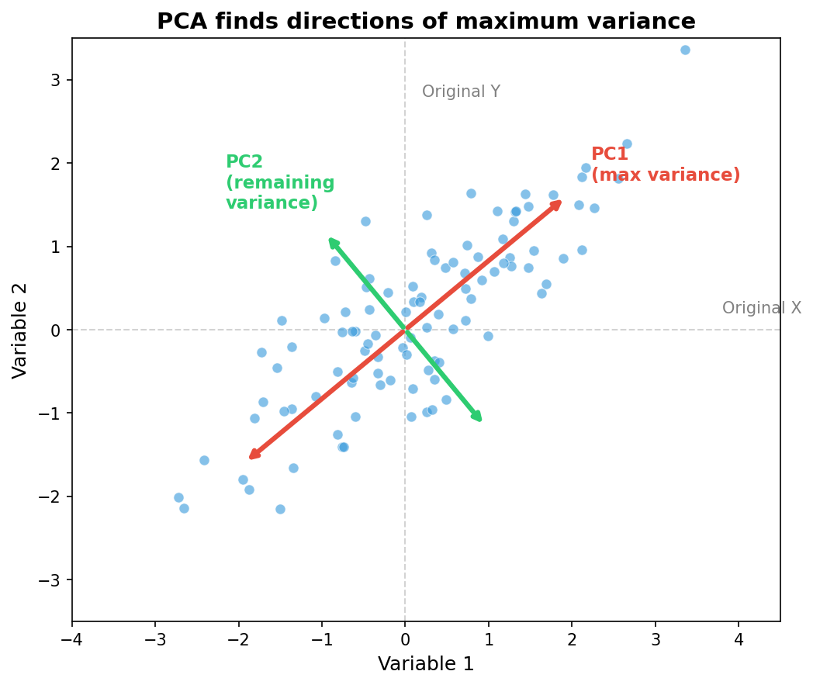
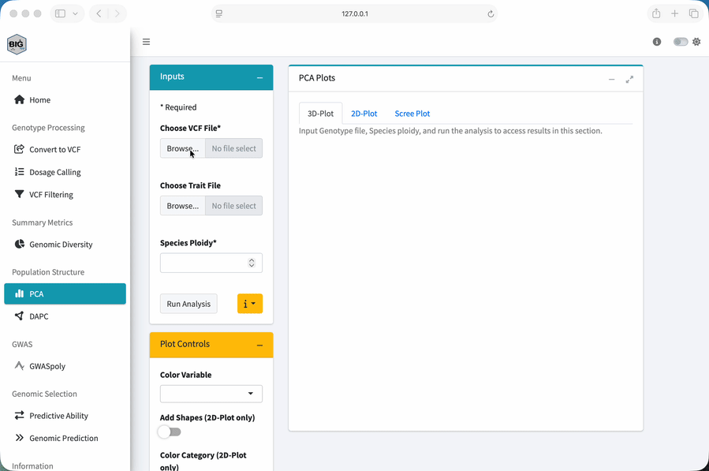
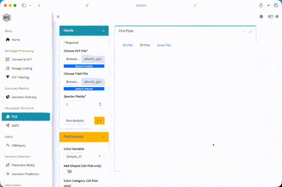
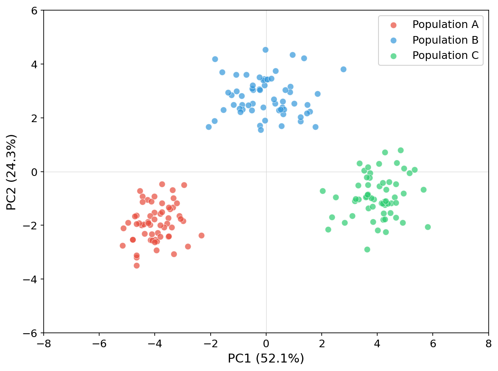
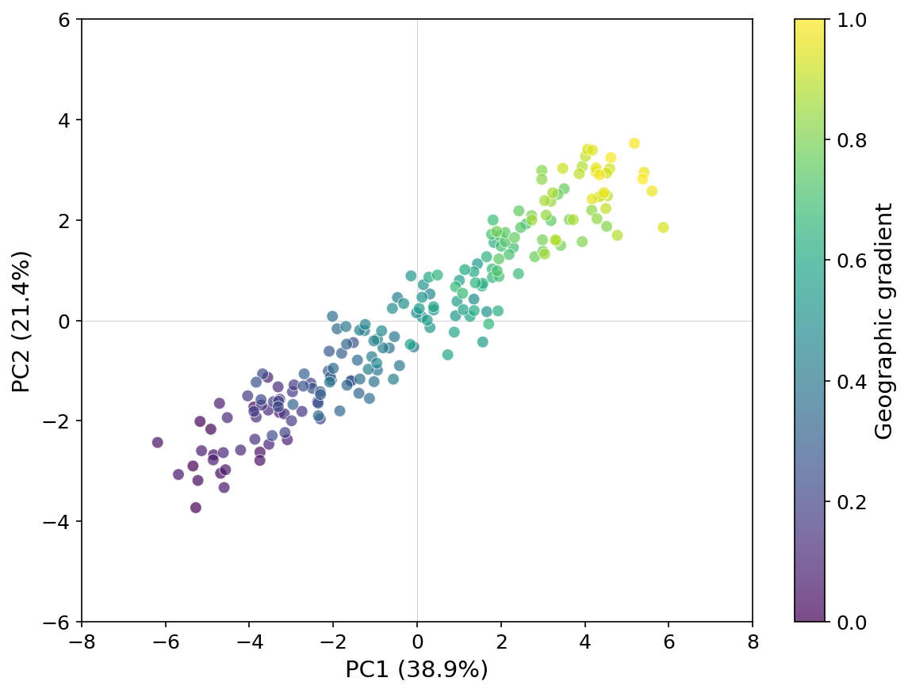
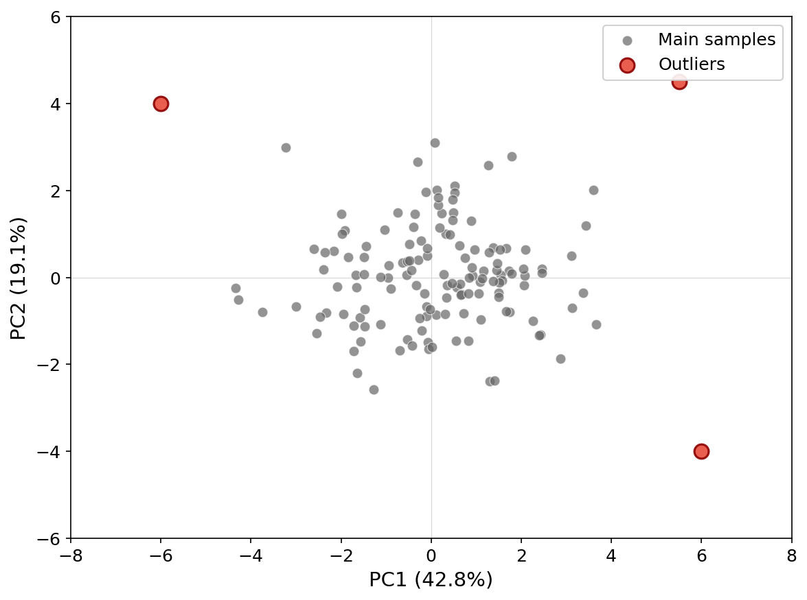

Module 2: Population Structure and PCA
Visualize genetic relationships
Lesson at a glance
- Time: 25 minutes
- Start with: the filtered VCF and phenotype CSV
- Do: run PCA, inspect variance, and compare plots with metadata
- Save: the PC table and a plot with the settings used
What is Population Structure?
Population structure means that some samples are more genetically similar to one another than to the rest of the dataset. Geography, breeding history, selection, gene flow, and relatedness can all create that pattern.
Why Does It Matter for Breeding?
Why do we care? If we ignore structure, it can be confused with a marker-trait association. It can also affect how well a prediction transfers from one group to another.
Structure can also help us understand the material itself. We might see distinct ancestry groups, continuous variation, recent mixing, duplicate samples, or a sample that does not match its label. PCA gives us a first look at those patterns.
What is PCA?
Principal component analysis, or PCA, takes variation across thousands of markers and summarizes its main patterns with a small number of axes. This lets us visualize high-dimensional genotype data in two or three dimensions.
The Intuition
Imagine that every SNP is its own dimension. A dataset with 5,000 SNPs places each sample in a 5,000-dimensional space, which we cannot draw directly.
PCA finds new axes through that space:
- PC1 captures the largest direction of variation among the samples.
- PC2 captures the largest remaining direction that is independent of PC1.
- Later PCs continue to capture smaller, independent directions of variation.
We then plot the sample coordinates on two or three of those axes.

Reading a PCA Plot
Each point is one sample. The geometry has a direct interpretation:
- Samples close together have more similar marker profiles.
- Samples far apart are more genetically different along the plotted axes.
- Clusters show groups of samples that share marker patterns.
- A gradient shows continuous genetic change rather than a sharp division.
- An isolated point is genetically different from the main cloud on those axes.
I like to read the plot in three passes:
- Check the axes. Which PCs are plotted, and how much marker variation does each represent?
- Look at the points. Do you see separation, overlap, gradients, or isolated samples?
- Add the metadata. Color or shape the points with trusted fields such as region, state, breeding program, plate, or sequencing batch.
PCA shows the marker pattern, but it does not name its cause. We use biological and technical metadata to determine whether a cluster or gradient reflects ancestry, breeding history, relatedness, data quality, or a batch effect. Likewise, an outlier is a sample to investigate, not a sample to remove automatically.
Running PCA in BIGapp
- Select PCA under Population Structure.
- Under Choose VCF File, upload the filtered VCF from Module 1.
- Under Choose Trait File, upload
atlantic_giant_pumpkin_diversity_phenotypes.csv. - In Trait File Options, set Missing Data Value to
NA, chooseSample_IDfor Sample ID Column, review the preview, and select Save. - Set Species Ploidy to
2. - Select Run Analysis and wait for the status to finish.
- Review 3D-Plot, 2D-Plot, and Scree Plot under PCA Plots.
- In Plot Controls, set Color Variable to
Region. - Compare
RegionwithStateandBreeding_Program. Use Add Shapes (2D-Plot only) if an additional visual encoding helps.

Understanding the Output
The 2D and 3D plots show sample scores on selected components. The scree plot shows the variance summarized by successive components. Use the X-axis and Y-axis controls to inspect more than the first pair.
The workshop panel simulates three regional ancestry sources with gene flow. Color is therefore used to compare known simulated metadata with the genetic pattern, not to create the pattern.

Coloring by Groups
Color does not create the PCA pattern. It lets us compare a pattern that was calculated from the markers with information we already have about the samples.
Start with Region, then try State and Breeding_Program. Technical fields matter too. If a cluster lines up with a sequencing batch or plate rather than a biological field, we need to investigate that before telling a biological story.
Use Add Shapes (2D-Plot only) when a second grouping helps. Keep the plot readable. Too many colors and shapes can hide the pattern we are trying to understand.
How Many PCs Should We Look At?
The scree plot shows how much marker variation is summarized by each principal component. A sharp decline means the early PCs capture relatively large directions of variation. A gradual decline means the variation is spread across more axes.
There is no universal number of PCs to inspect. Start with PC1 and PC2, look at the scree plot, then compare other pairs such as PC2 and PC3. If an important pattern appears only on a later axis, check whether it matches biology, data quality, or a technical variable.
Interpreting Your Results
The shape of a PCA plot is a starting point. It tells us what pattern needs an explanation, but not whether that explanation is biological, technical, or a mixture of both.
Scenario 1: Clear Clusters

What the plot shows: The samples form distinct groups in marker space.
Possible explanations: Ancestry, breeding history, related sets of samples, or a technical batch can create those groups.
What to check:
- Do the clusters match
Region,State, orBreeding_Program? - Do they instead match plate, sequencing batch, missingness, or another technical field?
- Are the groups still visible on other PC pairs?
What to do next: Account for structure in association models, and make sure prediction validation represents any transfer between groups. Whether groups should be analyzed together or separately depends on the biological question, sample sizes, and intended use.
Scenario 2: Continuous Variation

What the plot shows: The samples vary along a genetic gradient rather than forming discrete groups.
Possible explanations: Admixture, gene flow, geography, or a gradual breeding-history pattern can create that gradient.
What to check:
- Does position along the gradient match geography or ancestry metadata?
- Does a technical variable change along the same axis?
- Do later PCs reveal another pattern hidden by the main gradient?
What to do next: Do not treat the lack of sharp clusters as evidence that structure is absent. Include the relevant structure controls in downstream models and design validation across the part of the gradient where predictions will be used.
Scenario 3: Outliers

What the plot shows: One or more samples are separated from the main cloud on the plotted axes.
Possible explanations: A sample may be genuinely different, mislabeled, contaminated, unusually related to the rest, outside the intended taxon, or affected by poor genotype data.
What to check:
- sample identity and metadata
- SNP and sample missingness
- observed heterozygosity and read depth
- expected ploidy and taxon
- plate, sequencing batch, and possible contamination
What to do next: Do not remove an outlier just because it is far from the main cloud. Confirm the explanation first, document the evidence, and then decide whether it belongs in the analysis or should be handled separately.
Optional: DAPC
BIGapp also includes DAPC under Population Structure. PCA summarizes the main continuous directions of marker variation without requiring groups. DAPC is a separate workflow that first estimates or accepts a number of clusters and then looks for axes that separate those groups.
DAPC can be useful when group assignment is the question, but it should not replace the exploratory PCA in this module. The selected number of clusters, retained PCs, sample size, and biological interpretation all matter. If you use it, save the BIC Plot, BIC Values, DAPC Plot, and assignment table with the settings used.
Exercise
- Which regional patterns overlap most?
- Does coloring by
Stateshow finer variation withinRegion? - Are any apparent outliers also unusual in sequencing lane, plate, or missingness?
- How does the plot change when you use PC2 and PC3?
The PCA should show three overlapping regional patterns rather than three perfectly separated groups. Eastern and Midwest samples overlap, while Western samples tend to be more separated. That overlap is expected because the simulated ancestry proportions include gene flow.
Coloring by Region should make the broad pattern easier to see. State may show finer variation, but the samples remain admixed. Exact variance percentages depend on the VCF you uploaded, so record the values from your run instead of comparing them with a generic expected range.
Metadata associations are prompts for follow-up. They do not by themselves distinguish biology from a technical batch effect.
Key Takeaways
- PCA summarizes marker variation; it does not assign biological populations by itself.
- Interpret the axes and point geometry before coloring by metadata.
- Compare biological labels with technical labels when investigating clusters or outliers.
- Save the PC scores and plotting choices so the display can be reproduced.
Next: Download the PC table as an audit record, then continue to Module 3: GWASpoly.